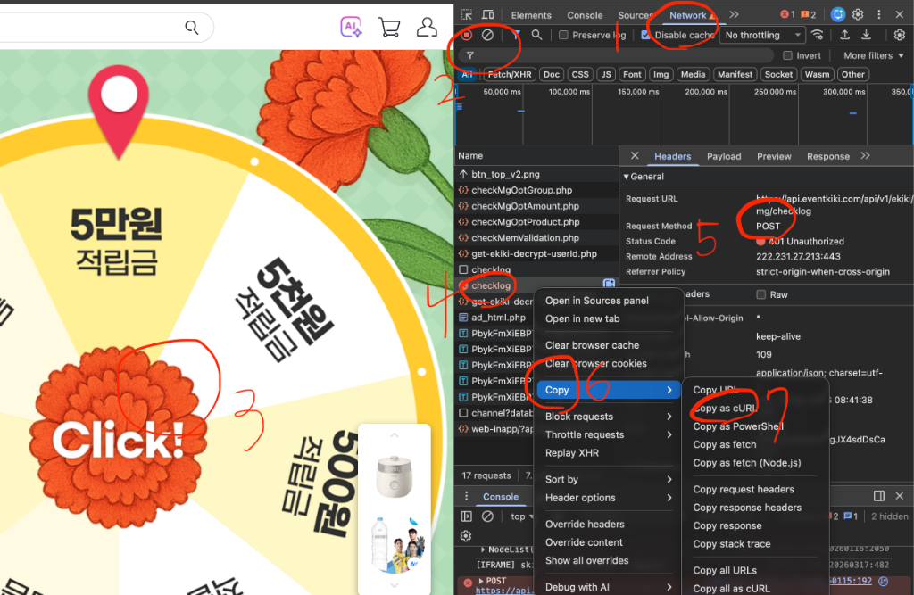

No commands added yet.

크롬 브라우저에서 F12를 누릅니다.
상단 메뉴에서 Network(네트워크) 탭을 누릅니다.
필터에서 그날 최초는 pick, 이미 했다면 checklog를 입력합니다.
pick
checklog
페이지의 이벤트 버튼을 클릭합니다.
필터링된 결과에서 pick 또는 checklog 항목을 확인합니다.
해당 요청의 Method가 POST여야 합니다.
항목 위에서 우클릭 후 Copy 메뉴로 이동합니다.
Copy as cURL을 클릭합니다.
복사한 내용을 메모장에 붙여넣습니다.
checklog로 복사했다면, 해당 단어를 pickrwd로 교체합니다.
pickrwd
수정된 전체 글자를 다시 복사합니다.
Curliflower 앱을 실행합니다.
+ Add Request 버튼을 누릅니다.
입력창에 10번에서 복사한 글자를 붙여넣습니다.
Add to Queue 버튼을 눌러 추가합니다.
Run 또는 Run All Now를 눌러 테스트해 봅니다.
Paste your fetch() code or curl command below